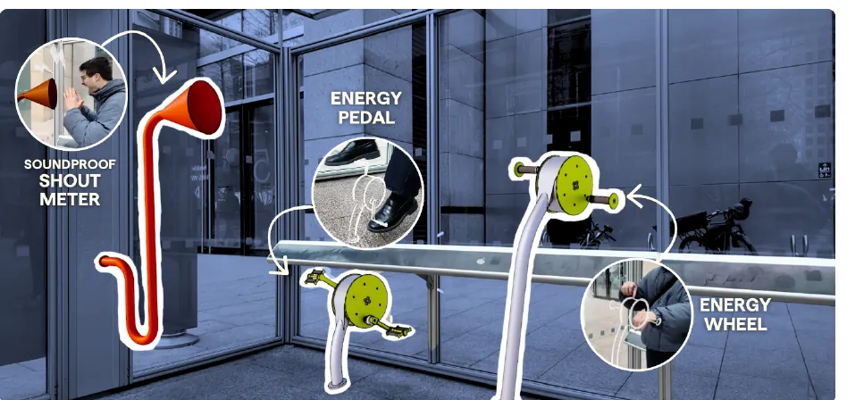
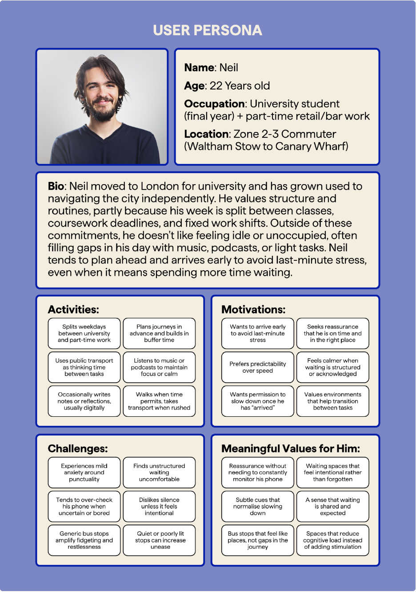
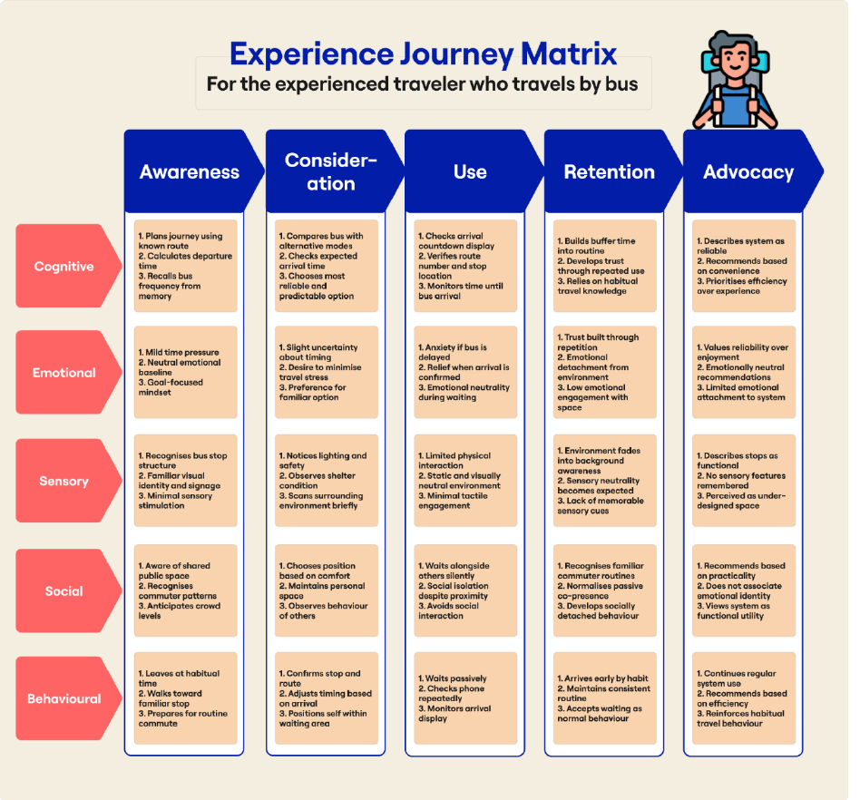
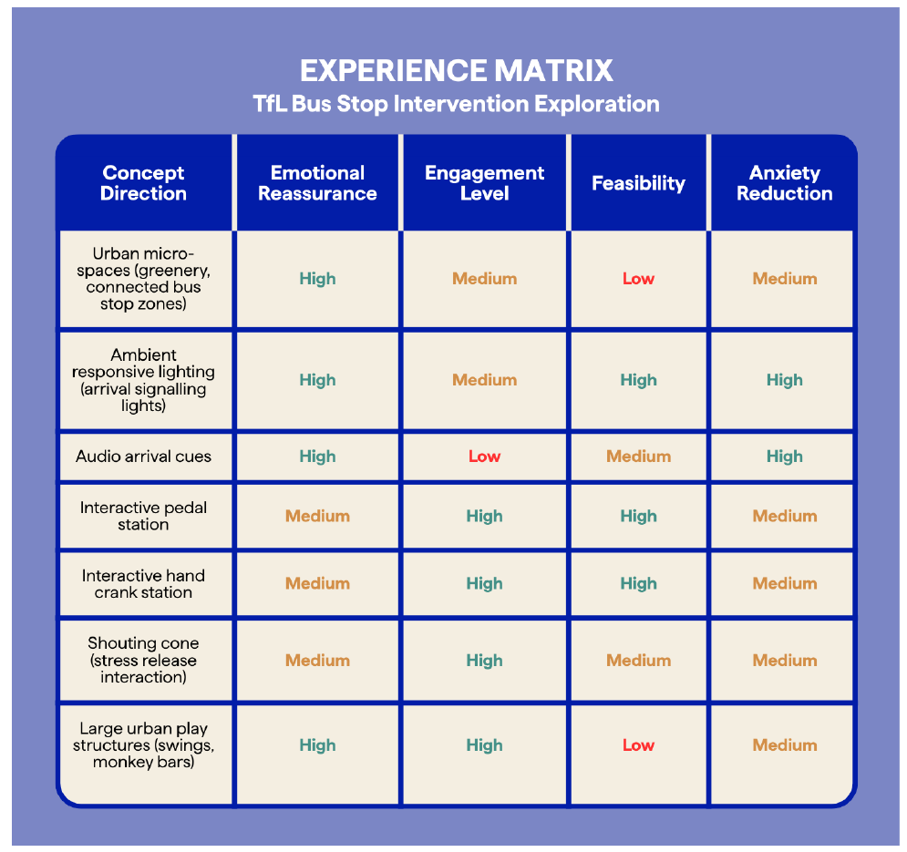
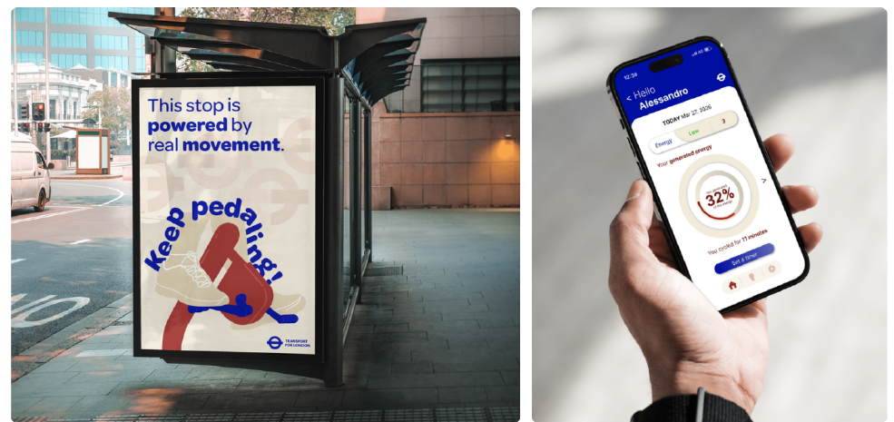
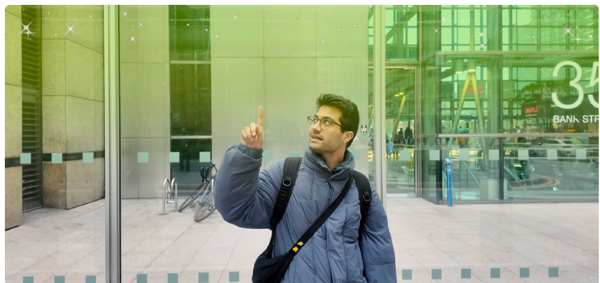

2026 / LONDON
伦敦公交候车
体验研究
以伦敦 TfL 公交站为场景，研究候车体验，并提出公共空间互动概念。

无法让车更快到达，
能否让等待更安心？
公交站通常提供站牌、座椅与遮蔽，但候车者仍会反复查看手机或到站屏幕。团队把问题从“如何让车更快到达”，转向“当到站时间不确定时，怎样让这段等待更安心、更有意义”。
需要知道车何时来
不确定的到站时间使乘客持续确认信息，难以放心把注意力从倒计时上移开。
等待缺少可参与的事
人物画像提示：乘客既可能希望有温和的参与选择，也可能只想安静休息。增加活动不应成为候车的新负担。
从服务价值到
候车者的真实处境。
我负责梳理 TfL 的服务价值，搜集英国公交出行的背景资料；与团队一起构建用户画像和乘客旅程，分析候车过程中的行为、情绪及信息需求，并帮助形成关键洞察。我还制作、更新了用于概念验证的实体原型，撰写报告中的用户画像与旅程章节。
把准点、信息可达等功能价值，与安心感、归属感等体验价值放在同一框架里。
聚焦年轻日常通勤者，追踪出发、选择、候车与乘车前后的情绪变化。
通过实体模型讨论装置位置、动作方式和可感知的反馈，而不只停留在效果图。
把“等车”拆成
一段连续的旅程。
团队用用户画像和体验旅程矩阵，把认知、情绪、感官、社交与行为五个维度放在一起看。机会点不只是增加一个设施，而是在保持到站信息清晰的同时，为乘客提供自愿参与、随时可中断的活动。


由团队画像与旅程材料归纳的设计推导，不代表所有乘客的共同偏好，也不等同于已验证的行为因果。
画像和旅程是团队研究工具，不代表所有伦敦公交乘客。报告也指出：还需要更多站点现场观察与简短访谈，才能验证这些推断。
让行动带来反馈，
而不是只让人消磨时间。
团队提出在 Canary Wharf 部分公交站设置脚踏、手摇等轻量互动装置，并用顶部环境灯光柔和地提示车辆接近。概念中的乘客可选择参与，也可以只从更清晰、更有活力的候车环境中受益。
确认信息→候车
自愿互动→装置
即时反馈→车辆接近
灯光提示
依据团队方案探索整理。原报告的高、中、低评价属于概念阶段判断，不是实测效果或工程可行性结论。
“你的手机，
不会让公交车来得更快。”
从筛选依据，
到可以讨论的原型。
除了用户画像、体验旅程和最终装置图，团队还制作了方案筛选矩阵、站点传播海报、能量反馈界面和环境灯光使用情境。这些成果把抽象概念变成可以继续讨论空间、信息与交互关系的材料。



这些图像均来自团队课程报告，是方案沟通与原型材料，不代表 TfL 已采纳、安装或完成真实用户验证。
概念成立，
不等于服务已经成立。
这是一次公共交通体验的创意设计探索，并非 TfL 已采纳或投入使用的服务。下一步需要在真实站点检验：互动是否会干扰通行或候车信息、不同身体能力的乘客能否平等使用、装置如何维护，以及能量与灯光方案是否具备技术和成本可行性。
原型之后，最需要验证的三个问题
参与，还是增加刺激？
画像强调降低认知负担，而方案包含身体活动、喊叫装置与能量记录界面。需要检验不同乘客是否愿意使用；尤其是喊叫装置，仍需解释其保留理由，并评估噪声、卫生与旁人感受。
灯亮究竟意味着什么？
运动反馈与车辆接近提示需要区分。基础照明、到站信息不应取决于是否有人参与发电；发电量、供电方式与维护成本也尚需工程验证。
不把吸引注意当作改善体验
后续可对比普通候车、仅环境提示、提示加可选互动三种情境，观察提示理解、参与意愿、查看手机行为及是否影响注意车辆。缓解焦虑与包容性应作为待验证目标。
本页的用户画像、旅程图和方案图来自五人团队课程报告；我负责的工作以报告分工表为准。图示为概念与研究材料，不是已安装站点的照片。